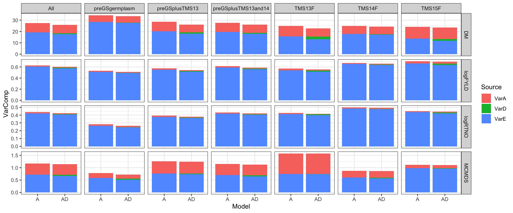
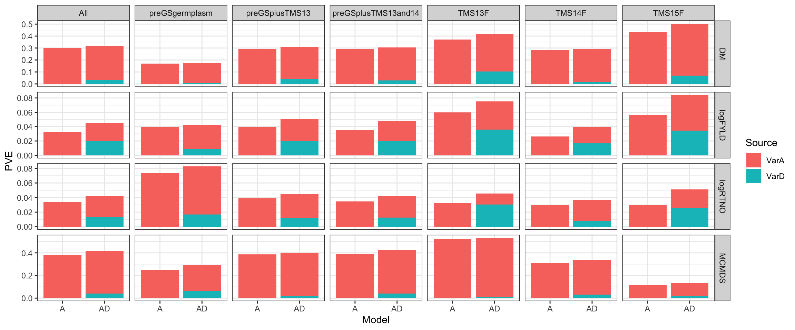

Last updated: 2019-12-09
Checks: 7 0
Knit directory: PredictOutbredCrossVar/
This reproducible R Markdown analysis was created with workflowr (version 1.5.0.9000). The Checks tab describes the reproducibility checks that were applied when the results were created. The Past versions tab lists the development history.
Great! Since the R Markdown file has been committed to the Git repository, you know the exact version of the code that produced these results.
Great job! The global environment was empty. Objects defined in the global environment can affect the analysis in your R Markdown file in unknown ways. For reproduciblity it’s best to always run the code in an empty environment.
The command set.seed(20191123) was run prior to running the code in the R Markdown file. Setting a seed ensures that any results that rely on randomness, e.g. subsampling or permutations, are reproducible.
Great job! Recording the operating system, R version, and package versions is critical for reproducibility.
Nice! There were no cached chunks for this analysis, so you can be confident that you successfully produced the results during this run.
Great job! Using relative paths to the files within your workflowr project makes it easier to run your code on other machines.
Great! You are using Git for version control. Tracking code development and connecting the code version to the results is critical for reproducibility. The version displayed above was the version of the Git repository at the time these results were generated.
Note that you need to be careful to ensure that all relevant files for the analysis have been committed to Git prior to generating the results (you can use wflow_publish or wflow_git_commit). workflowr only checks the R Markdown file, but you know if there are other scripts or data files that it depends on. Below is the status of the Git repository when the results were generated:
Ignored files:
Ignored: .DS_Store
Ignored: .Rhistory
Ignored: .Rproj.user/
Ignored: analysis/.DS_Store
Ignored: data/.DS_Store
Ignored: output/.DS_Store
Untracked files:
Untracked: output/markerEffects_20191126/
Untracked: workflowr_log.R
Note that any generated files, e.g. HTML, png, CSS, etc., are not included in this status report because it is ok for generated content to have uncommitted changes.
These are the previous versions of the R Markdown and HTML files. If you’ve configured a remote Git repository (see ?wflow_git_remote), click on the hyperlinks in the table below to view them.
| File | Version | Author | Date | Message |
|---|---|---|---|---|
| Rmd | 53c46fb | wolfemd | 2019-12-09 | Publish the first version of analysis to get marker effects using REML |
Techincally, should be Predict Marker Effects, because SNP-BLUP will be used.
Part of a project to predict cross variances.
First step is to get estimates of marker effects.
Furthermore, we want to test different methods of getting marker effects on downstream variance prediction.
Specifically, at this stage I will:
BGLR, models BRR and BayesB, possibly others. Must ensure convergence.sommer. Either direct (SNP-BLUP) or indirect (backsolve from GBLUP) REML marker effects.Marker effects estimates and other analyses for this study will start with BLUPs (de-regressed BLUPs + weights) for each clone.
The BLUPs were obtained in July 2019 for IITA GS C4 selection. Documentation, including (most) data and code can be found here.
You can actually load them directly into R from the web:
rm(list=ls()); gc()
library(tidyverse); library(magrittr);
blups<-readRDS(url("https://raw.github.com/wolfemd/IITA_2019GS/master/data/iita_blupsForCrossVal_72619.rds"))
ped<-readRDS("/workdir/marnin/PredictOutbredCrossVar/data/IITA_Pedigree_51218.rds")
snps<-readRDS("/workdir/marnin/PredictOutbredCrossVar/data/dosages_RefPanelAndGSprogeny_102319.rds")Samples to keep:
pre-GS germplasm with phenos pre-GS germlasm with offspring 2013_|TMS13F|TMS14F|TMS15F|TMS18F
# germplasm with BLUPs
gidWithBLUPs<-blups %>%
select(Trait,blups) %>%
unnest(blups) %$% GID %>% unique
length(gidWithBLUPs) # 35270
# pre-GS germplasm with BLUPs
preGSgermWithGenoAndPheno<-gidWithBLUPs %>%
.[. %in% rownames(snps)] %>%
grep("2013_|TMS13F|TMS14F|TMS15F|TMS18F",.,value = T, invert = T)
length(preGSgermWithGenoAndPheno) # 1228
# pre-GS germplasm with offspring
preGSgermWithGenoAndOffspring<-rownames(snps) %>%
grep("2013_|TMS13F|TMS14F|TMS15F|TMS18F",.,value = T, invert = T) %>%
.[. %in% union(ped$FullSampleName,union(ped$Sire,ped$Dam))]
length(preGSgermWithGenoAndOffspring) # 178
# Do all pre-GS parents have BLUPs?
table(preGSgermWithGenoAndOffspring %in% preGSgermWithGenoAndPheno)
# FALSE TRUE
# 3 175
# GS progeny
gsProgeny<-rownames(snps) %>%
grep("2013_|TMS13F|TMS14F|TMS15F|TMS18F",.,value = T, invert = F)
length(gsProgeny) # 10301
# How many GS progeny with BLUPs?
table(gsProgeny %in% gidWithBLUPs) # 5401
# Total samples to keep:
samples2keep<-c(preGSgermWithGenoAndPheno,
preGSgermWithGenoAndOffspring,
gsProgeny) %>% unique
length(samples2keep) # 11532 (out of 21856)
# Number of accessions that actually have BLUPs
table(samples2keep %in% gidWithBLUPs)
# FALSE TRUE
# 4903 6629Subset dosage matrix
MAF>1% filter
centerDosage<-function(M){
# Modified from my "kinship" function
# Converts a dosage matrix into a centered-dosage
# Purpose is for whole-genome regressions like rrBLUP
# Assumes SNPs in M coded 0, 1, 2 (requires rounding dosages to integers)
# M is Nind x Mrow, numeric matrix, with row/columanes to indicate SNP/ind ID
freq <- colMeans(M,na.rm=T)/2
P <- matrix(rep(freq,nrow(M)),byrow=T,ncol=ncol(M))
Z <- M-2*P
return(Z)
}
dose2domDev<-function(M){
# Modified from my "kinship" function
# Converts a dosage matrix into a matrix of centered dominance deviations
# Purpose is for whole-genome regressions like rrBLUP
# Assumes SNPs in M coded 0, 1, 2 (requires rounding dosages to integers)
# M is Nind x Mrow, numeric matrix, with row/columanes to indicate SNP/ind ID
# Vitezica et al. 2013. Genetics ("Classical")
freq <- colMeans(M,na.rm=T)/2
P <- matrix(rep(freq,nrow(M)),byrow=T,ncol=ncol(M))
W<-M;
W[which(W==1)]<-2*P[which(W==1)];
W[which(W==2)]<-(4*P[which(W==2)]-2);
W <- W-2*(P^2)
return(W)
}
Madd<-centerDosage(snps)
Mdom<-dose2domDev(snps)kinship<-function(M,type){
# Assumes SNPs in M coded 0, 1, 2 (requires rounding dosages to integers)
# M is Nind x Mrow, numeric matrix, with row/columanes to indicate SNP/ind ID
# Two types of dominance matrix, as described in
# Vitezica et al. 2013. Genetics (Genotypic and Classical)
# Both predict identically.
# Difference in meaning of variance components.
# type == "Add" should match A.mat() / Van Raden, Method 2
M<-round(M)
freq <- colMeans(M,na.rm=T)/2
P <- matrix(rep(freq,nrow(M)),byrow=T,ncol=ncol(M))
if(type=="Add"){
Z <- M-2*P
varD<-sum(2*freq*(1-freq))
K <- tcrossprod(Z)/ varD
return(K)
}
if(type=="Dom"){
W<-M;
W[which(W==1)]<-2*P[which(W==1)];
W[which(W==2)]<-(4*P[which(W==2)]-2);
W <- W-2*(P^2)
varD<-sum((2*freq*(1-freq))^2)
D <- tcrossprod(W) / varD
return(D)
}
}
Kadd<-kinship(snps,"Add")
Kdom<-kinship(snps,"Dom")# Centered dosages
saveRDS(Madd,file="/workdir/marnin/PredictOutbredCrossVar/data/Madd_IITA_20191124.rds")
saveRDS(Mdom,file="/workdir/marnin/PredictOutbredCrossVar/data/Mdom_IITA_20191124.rds")
# Kinships
saveRDS(Kadd,file="/workdir/marnin/PredictOutbredCrossVar/data/Kadd_IITA_20191124.rds")
saveRDS(Kdom,file="/workdir/marnin/PredictOutbredCrossVar/data/Kdom_IITA_20191124.rds")
#rm(snps); gc()191 Mb each
Use the following to initialize Bayesian and REML analyses below.
In fresh R sessions…
#rm(list=ls()); gc()
library(tidyverse); library(magrittr);
blups<-readRDS(url("https://raw.github.com/wolfemd/IITA_2019GS/master/data/iita_blupsForCrossVal_72619.rds"))
rownamesMadd<-readRDS("/workdir/marnin/PredictOutbredCrossVar/data/Madd_IITA_20191124.rds") %>%
rownames(.)
#Mdom<-readRDS("/workdir/marnin/PredictOutbredCrossVar/data/Mdom_IITA_20191124.rds")
blups %<>%
filter(Dataset=="HistoricalDataIncluded",
Trait %in% c("DM","logFYLD","logRTNO","MCMDS")) %>%
dplyr::select(Trait,blups) %>%
dplyr::rename(BLUPs=blups) %>%
mutate(BLUPs=map(BLUPs,~filter(.,
GID %in% rownamesMadd,
!grepl("TMS18F",GID))))
trainingsets<-blups %>%
mutate(Dataset="All") %>%
bind_rows(blups %>%
mutate(BLUPs=map(BLUPs,~filter(.,!grepl("2013_|TMS13F|TMS14F|TMS15F",GID))),
Dataset="preGSgermplasm")) %>%
bind_rows(blups %>%
mutate(BLUPs=map(BLUPs,~filter(.,grepl("2013_|TMS13F",GID))),
Dataset="TMS13F")) %>%
bind_rows(blups %>%
mutate(BLUPs=map(BLUPs,~filter(.,grepl("TMS14F",GID))),
Dataset="TMS14F")) %>%
bind_rows(blups %>%
mutate(BLUPs=map(BLUPs,~filter(.,grepl("TMS15F",GID))),
Dataset="TMS15F")) %>%
bind_rows(blups %>%
mutate(BLUPs=map(BLUPs,~filter(.,!grepl("TMS14F|TMS15F",GID))),
Dataset="preGSplusTMS13")) %>%
bind_rows(blups %>%
mutate(BLUPs=map(BLUPs,~filter(.,!grepl("TMS15F",GID))),
Dataset="preGSplusTMS13and14"))
rm(blups); gc()4 traits x 7 subsets = 28 training datasets
Get marker effects for both additive and dominance terms.
Fit models additive [model=A] and additive plus dominance [model=AD].
BGLR)Use BGLR, models BRR and BayesB, possibly others. Must ensure convergence.
mkdir /workdir/marnin/PredictOutbredCrossVar/output
mkdir /workdir/marnin/PredictOutbredCrossVar/output/markerEffects_20191124
mkdir /workdir/marnin/PredictOutbredCrossVar/output/markerEffects_201911264 traits x 7 training sets x 2 models x 2 bayes types = 112 analyses.
The code below implements the 112 analyses using BGLR.
nIter=100K burnIn=20K thin=10
Use of saveEffects=TRUE in BGLR writes the marker effects predictions for every post-burnIn, thinned iteration of the Gibbs sampler. So the output is enormous at 4.1Gb per variance component.
This is necessary to compute the “posterior mean variance” or PMV as in Lehermeier et al. 2017a,b.
Include code to benchmark runtimes and memory usage.
library(furrr); plan(multiprocess);
niter<-100000; nburn<-20000; nthin<-10;
fitBGLR<-function(Trait,BLUPs,Model,Type,Dataset,...){
require(BGLR)
# debuggin params
# ---------------------------
# BLUPs<-bglrEffects$BLUPs[[1]]
# Trait<-bglrEffects$Trait[[1]]
# Model<-bglrEffects$Model[[1]]
# Type<-bglrEffects$Type[[1]]
# Dataset<-bglrEffects$Dataset[[1]]
# rm(BLUPs,Trait,Model,Type,Dataset)
# rm(gcstart,timestart,Madd_tp,Mdom_tp,Z,eta,timemodelprepped,modelFit,timemodelfitted,gcend)
# ---------------------------
gcstart<-gc(reset = TRUE)
timestart<-proc.time()[3]
Madd_tp<-readRDS("/workdir/marnin/PredictOutbredCrossVar/data/Madd_IITA_20191124.rds") %>%
.[BLUPs$GID,]
if(Model=="AD"){
Mdom_tp<-readRDS("/workdir/marnin/PredictOutbredCrossVar/data/Mdom_IITA_20191124.rds") %>%
.[BLUPs$GID,] }
BLUPs %<>% mutate(GID=factor(GID,levels=rownames(Madd_tp)))
Z <- model.matrix(~GID-1,data=BLUPs)
eta<-list()
eta[["Ga"]]<-list(X = Z%*%Madd_tp, model = Type, saveEffects=TRUE)
rm(Madd_tp)
if(Model=="AD"){
eta[["Gd"]]<-list(X = Z%*%Mdom_tp, model = Type, saveEffects=TRUE)
rm(Mdom_tp) }
timemodelprepped<-proc.time()[3]
modelFit <- BGLR(y=BLUPs$drgBLUP,
weights=BLUPs$WT,
ETA=eta,
nIter=niter,burnIn=nburn,thin=nthin,
saveAt=paste0("/workdir/marnin/PredictOutbredCrossVar/output/markerEffects_20191126/",
Trait,"_",Dataset,"_",Model,"_",Type))
timemodelfitted<-proc.time()[3]
rm(eta,Z,BLUPs);
gcend<-gc()
computeStats<-tibble(ModelPrepTimeMins=(timemodelprepped-timestart)/60,
ModelFitTimeMins=(timemodelfitted-timemodelprepped)/60,
StartMemGB=sum(gcstart[,2])/1000,
EndMemGB=sum(gcend[,2])/1000,
MaxMemGB=sum(gcend[,6])/1000)
results<-list(computeStats=computeStats,
modelFit=modelFit)
print(results$computeStats)
rm(modelFit); gc()
return(results) }Out of caution, run the first 28 of 112 and distribute on 7 cores of a 512GB RAM machine.
ncores<-7; options(mc.cores=ncores);
bglrEffects_1<-trainingsets %>%
crossing(.,Model=c("A","AD")) %>%
crossing(.,Type=c("BRR","BayesB")) %>%
slice(1:28) %>%
mutate(BGLRfit=future_pmap(.,fitBGLR))
saveRDS(bglrEffects_1,
file=paste0("/workdir/marnin/PredictOutbredCrossVar/output/markerEffects_20191126/",
"markerEffects_BGLR_AandADmodels_1_20191126.rds"))
bglr_sessionInfo<-sessionInfo()
saveRDS(bglr_sessionInfo,
file=paste0("/workdir/marnin/PredictOutbredCrossVar/output/markerEffects_20191126/",
"sessionInfo_BGLR_AandADmodels_20191126.rds"))Next 28 on a second set of 7 cores.
ncores<-7; options(mc.cores=ncores);
bglrEffects_2<-trainingsets %>%
crossing(.,Model=c("A","AD")) %>%
crossing(.,Type=c("BRR","BayesB")) %>%
slice(29:56) %>%
mutate(BGLRfit=future_pmap(.,fitBGLR))
saveRDS(bglrEffects_2,
file=paste0("/workdir/marnin/PredictOutbredCrossVar/output/markerEffects_20191126/",
"markerEffects_BGLR_AandADmodels_2_20191126.rds"))ncores<-14; options(mc.cores=ncores);
bglrEffects_3<-trainingsets %>%
crossing(.,Model=c("A","AD")) %>%
crossing(.,Type=c("BRR","BayesB")) %>%
slice(57:112) %>%
mutate(BGLRfit=future_pmap(.,fitBGLR))
saveRDS(bglrEffects_3,
file=paste0("/workdir/marnin/PredictOutbredCrossVar/output/markerEffects_20191126/",
"markerEffects_BGLR_AandADmodels_3_20191126.rds"))sommer)Initial testing of directly doing RR-BLUP in sommer is memory intensive.
Instead, I adopt an indirect appreach of backsolved SNP-effects from GBLUP.
library(furrr); plan(multiprocess);
remlEffects<-trainingsets %>%
crossing(.,Model=c("A","AD")) %>%
mutate(Type="backsolveGBLUP")
fit_sommer<-function(Trait,BLUPs,Model,Type,Dataset,...){
require(sommer)
# debuggin params
# ---------------------------
# BLUPs<-remlEffects$BLUPs[[10]]
# Trait<-remlEffects$Trait[[10]]
# Model<-remlEffects$Model[[10]]
# Type<-remlEffects$Type[[10]]
# Dataset<-remlEffects$Dataset[[10]]
# rm(BLUPs,Trait,Model,Type,Dataset)
# rm(gcstart,timestart,Madd_tp,Mdom_tp,Z,eta,timemodelprepped,modelFit,timemodelfitted,gcend)
# # ---------------------------
gcstart<-gc(reset = TRUE)
timestart<-proc.time()[3]
Kadd_tp<-readRDS("/workdir/marnin/PredictOutbredCrossVar/data/Kadd_IITA_20191124.rds") %>%
.[BLUPs$GID,BLUPs$GID]
if(Model=="AD"){
Kdom_tp<-readRDS("/workdir/marnin/PredictOutbredCrossVar/data/Kdom_IITA_20191124.rds") %>%
.[BLUPs$GID,BLUPs$GID] }
BLUPs %<>% mutate(Ga=factor(GID,levels=rownames(Kadd_tp)))
if(Model=="AD"){
BLUPs %<>% mutate(Gd=factor(GID,levels=rownames(Kdom_tp))) }
eta<-ifelse(Model=="AD",
"~vs(Ga,Gu=Kadd_tp) + vs(Gd,Gu=Kdom_tp)",
"~vs(Ga,Gu=Kadd_tp)")
timereadyforgblup<-proc.time()[3]
# GBLUP
modelFit <- mmer(fixed = drgBLUP ~1,
random = as.formula(eta),
weights = WT,
data=BLUPs)
## Extract varcomp and model summary stats
varcomps<-summary(modelFit)$varcomp
fitstats<-summary(modelFit)$logo
## Extract G-BLUPs (GEBV)
gblup_add<-modelFit$U$`u:Ga`$drgBLUP
gpreds<-tibble(GID=names(gblup_add),
GEBV=as.numeric(gblup_add))
if(Model=="AD"){
gblup_dom<-modelFit$U$`u:Gd`$drgBLUP
gpreds %<>% mutate(GDDEV=as.numeric(gblup_dom)) }
rm(modelFit); gc()
timegblupfitted<-proc.time()[3]
# Load centered dosage matrices
Madd_tp<-readRDS("/workdir/marnin/PredictOutbredCrossVar/data/Madd_IITA_20191124.rds") %>%
.[BLUPs$GID,]
if(Model=="AD"){
Mdom_tp<-readRDS("/workdir/marnin/PredictOutbredCrossVar/data/Mdom_IITA_20191124.rds") %>%
.[BLUPs$GID,] }
gc()
# Backsolve RR-BLUP effects from GBLUP
Va<-varcomps["u:Ga.drgBLUP-drgBLUP","VarComp"]
snpblup_add<-t(Madd_tp)%*%solve(Kadd_tp*Va)%*%gblup_add
snppreds<-tibble(SNP=rownames(snpblup_add),
AddEffects=snpblup_add[,1])
rm(Kadd_tp,Madd_tp)
if(Model=="AD"){
Vd<-varcomps["u:Gd.drgBLUP-drgBLUP","VarComp"]
snpblup_dom<-t(Mdom_tp)%*%solve(Kdom_tp*Vd)%*%gblup_dom
snppreds %<>% mutate(DomEffects=as.numeric(snpblup_dom))
rm(Kdom_tp,Mdom_tp)
}
timebacksolved<-proc.time()[3]
gcend<-gc()
computeStats<-tibble(PrepTimeMins=(timereadyforgblup-timestart)/60,
GBLUPtimeMins=(timegblupfitted-timereadyforgblup)/60,
BacksolveTimeMins=(timebacksolved-timegblupfitted)/60,
StartMemGB=sum(gcstart[,2])/1000,
EndMemGB=sum(gcend[,2])/1000,
MaxMemGB=sum(gcend[,6])/1000)
results<-list(computeStats=computeStats,
GBLUPvarcomps=varcomps,
GBLUPfitstats=fitstats,
GBLUPs=gpreds,
SNPBLUPs=snppreds)
print(results$computeStats)
return(results) }ncores<-7; options(mc.cores=ncores);
remlEffects %<>%
mutate(BGLRfit=future_pmap(.,fit_sommer))
remlEffects %<>%
rename(REMLfit=BGLRfit) # whoops...
saveRDS(remlEffects,
file=paste0("/workdir/marnin/PredictOutbredCrossVar/output/markerEffects_20191126/",
"markerEffects_sommer_AandADmodels_20191126.rds"))Converting variance estimates between GBLUP and SNP-BLUP Lehermeier M1 (standard) vs. M2 (including LD)
library(tidyverse); library(magrittr);
pathIn<-"/workdir/marnin/PredictOutbredCrossVar/output/markerEffects_20191126/"
remlEffects<-readRDS(file=paste0(pathIn,
"markerEffects_sommer_AandADmodels_20191126.rds"))
BLUPs<-remlEffects$BLUPs[[9]]
M<-readRDS("/workdir/marnin/PredictOutbredCrossVar/data/Madd_IITA_20191124.rds") %>%
.[BLUPs$GID,]
set.seed(123)
dim(M)
M %<>% .[,sample(1:ncol(.),100,replace = F)]
BLUPs %<>% mutate(GID=factor(GID,levels=rownames(M)))
Z <- model.matrix(~GID-1,data=BLUPs)
brrfit<-BGLR(y=BLUPs$drgBLUP,
weights=BLUPs$WT,
ETA=list(Ga=list(X = Z%*%M, model = "BRR")),
nIter=1000,burnIn=100,thin=5)
summary(brrfit)
# Variance of phenotypes (TRN)= 20.83
# Residual variance= 33.0908
brrfit$ETA$Ga$varB # [1] 0.2203882
bgblupfit<-BGLR(y=BLUPs$drgBLUP,
weights=BLUPs$WT,
ETA=list(Ga=list(X = Z, model = "RKHS",K=)),
nIter=1000,burnIn=100,thin=5)
summary(bgblupfit)
# Variance of phenotypes (TRN)= 20.83
# Residual variance= 33.3928
bgblupfit$ETA$Ga$varU # [1] 9.948042
sum(apply(scale(M,center = T,scale = T),2,var))*brrfit$ETA$Ga$varB # [1] 6.515436library(tidyverse); library(magrittr);
snps<-readRDS(file="../data/snps_tst_20191124.rds")
blups<-readRDS("../data/iita_blupsForCrossVal_72619.rds") %>%
filter(Dataset=="HistoricalDataIncluded",
Trait=="DM") %>%
dplyr::select(Trait,blups) %>%
unnest(blups) %>%
filter(GID %in% rownames(snps))
snps %<>% .[blups$GID,]
all(rownames(snps)==blups$GID) #[1] TRUE
M<-round(snps)
freq <- colMeans(M,na.rm=T)/2
P <- matrix(rep(freq,nrow(M)),byrow=T,ncol=ncol(M))
Z <- M-2*P
varD<-sum(2*freq*(1-freq))
K <- tcrossprod(Z)/varD
blups %<>% mutate(GID=factor(GID,levels=rownames(K)))
library(sommer)
gblup <- mmer(fixed = drgBLUP ~1,
random = ~vs(GID,Gu=K),
weights = WT,
data=blups)I’m thinking that’s a rounding error…
Check the GEBV are the same
Z%*%snpblup$U$`u:Z`$drgBLUP; Z[1:5,1:10];
all(names(gblup$U$`u:GID`$drgBLUP)==rownames(Z%*%snpblup$U$`u:Z`$drgBLUP))
plot(gblup$U$`u:GID`$drgBLUP,Z%*%snpblup$U$`u:Z`$drgBLUP); abline(a = 0,b=1,col='red')A Bayesian version
bsnpblup<-BGLR(y=blups$drgBLUP,
weights=sqrt(blups$WT),
ETA=list(Ga=list(X = model.matrix(~GID-1,data=blups)%*%Z, model = "BRR")),
nIter=1000,burnIn=200,thin=5)
summary(bsnpblup)
# Variance of phenotypes (TRN)= 12.7956
# Residual variance= 35.2577
bsnpblup$ETA$Ga$varB # [1] 0.01462234
varD*bsnpblup$ETA$Ga$varB # [1] 4.56517bgblup1<-BGLR(y=blups$drgBLUP,
weights=blups$WT,
ETA=list(Ga=list(X = model.matrix(~GID-1,data=blups), model = "RKHS",K=K)),
nIter=100,burnIn=20,thin=5)
bgblup<-BGLR(y=blups$drgBLUP,
weights=sqrt(blups$WT),
ETA=list(Ga=list(X = model.matrix(~GID-1,data=blups), model = "RKHS",K=K)),
nIter=100,burnIn=20,thin=5)
summary(bgblup)
summary(bgblup1)
bgblup1$ETA$Ga$varUAccording to the checks I just ran above, I should have supplied the sqrt(WT) instead of WT to BGLR. The un-squared WT is correct for sommer.
For now, I’ll proceed using only the frequentist results.
# pathIn<-"/workdir/marnin/PredictOutbredCrossVar/output/markerEffects_20191126/"
#
# #pathIn<-"../output/markerEffects_20191126/"
# bglrEffects<-readRDS(file=paste0(pathIn,
# "markerEffects_BGLR_AandADmodels_1_20191126.rds")) %>%
# bind_rows(readRDS(file=paste0(pathIn,
# "markerEffects_BGLR_AandADmodels_2_20191126.rds"))) %>%
# bind_rows(readRDS(file=paste0(pathIn,
# "markerEffects_BGLR_AandADmodels_3_20191126.rds")))
# # Skip BayesB results for now, just to keep it simple.
# bglrEffects %<>% filter(Type!="BayesB")── Attaching packages ─────────────────────────────────────── tidyverse 1.2.1 ──✔ ggplot2 3.2.1 ✔ purrr 0.3.3
✔ tibble 2.1.3 ✔ dplyr 0.8.3
✔ tidyr 1.0.0 ✔ stringr 1.4.0
✔ readr 1.3.1 ✔ forcats 0.4.0── Conflicts ────────────────────────────────────────── tidyverse_conflicts() ──
✖ dplyr::filter() masks stats::filter()
✖ dplyr::lag() masks stats::lag()
Attaching package: 'magrittr'The following object is masked from 'package:purrr':
set_namesThe following object is masked from 'package:tidyr':
extract#pathIn<-"/workdir/marnin/PredictOutbredCrossVar/output/markerEffects_20191126/"
pathIn<-"output/markerEffects_20191126/"
remlEffects<-readRDS(file=paste0(pathIn,
"markerEffects_sommer_AandADmodels_20191126.rds"))remlEffects %>%
dplyr::select(-BLUPs,-Type) %>%
mutate(REMLfit=map(REMLfit,~.$GBLUPvarcomps %>%
rownames_to_column(var = "Source") %>%
mutate(Source=ifelse(grepl("Ga.drgBLUP",Source),"VarA",
ifelse(grepl("Gd.drgBLUP",Source),"VarD","VarE"))) %>%
dplyr::select(-Constraint))) %>%
unnest(REMLfit) %>%
ggplot(.,aes(x=Model,y=VarComp,fill=Source)) + geom_bar(stat = 'identity') +
facet_grid(Trait~Dataset,scales='free_y') + theme_bw() ### PVEs
remlEffects %>%
dplyr::select(-BLUPs,-Type) %>%
mutate(REMLfit=map(REMLfit,~.$GBLUPvarcomps %>%
rownames_to_column(var = "Source") %>%
mutate(Source=ifelse(grepl("Ga.drgBLUP",Source),"VarA",
ifelse(grepl("Gd.drgBLUP",Source),"VarD","VarE"))) %>%
dplyr::select(-Constraint))) %>%
unnest(REMLfit) %>%
group_by(Trait,Dataset,Model) %>%
mutate(PVE=VarComp/sum(VarComp)) %>%
ungroup() %>%
filter(Source!="VarE") %>%
ggplot(.,aes(x=Model,y=PVE,fill=Source)) + geom_bar(stat = 'identity') +
facet_grid(Trait~Dataset,scales='free_y') + theme_bw()
Based on de los Campos et al. 2015, Lehermeier et al. 2017a distinguished variance estimates which normally do not include the covariance due to LD:
M1
\[\sigma^{2}_{M1} = var(x'_{i}\beta) = \sigma^2_{SNPBLUP}\sum_{j=1}^{p} Var(x_{ij}) = \sum 2p(1-p)\beta^2\]
M2
\[\sigma^2_{M2}= var(x'_{i}\beta) = \beta'\Sigma_{x}\beta\] Where
$_{x} = (p x p) variance–covariance matrix of the genotype scores
Will compare the estimates of M1 and M2 first at the population level.
The reason being that the basis by which I predict cross variance is M2 with \(\Sigma_{x}\) expected in an infinite pool of progeny (see Predict Cross Variances ).
# activate multithread OpenBLAS for fast compute of SigmaM (genotypic var-covar matrix)
export OMP_NUM_THREADS=64library(tidyverse); library(magrittr); #library(BGLR)
pathIn<-"/workdir/marnin/PredictOutbredCrossVar/output/markerEffects_20191126/"
#pathIn<-"../output/markerEffects_20191126/"
remlEffects<-readRDS(file=paste0(pathIn,
"markerEffects_sommer_AandADmodels_20191126.rds"))
# debuggin params
# ---------------------------
BLUPs<-remlEffects$BLUPs[[1]]
REMLfit<-remlEffects$REMLfit[[1]]
Model<-remlEffects$Model[[1]]
Madd<-readRDS("/workdir/marnin/PredictOutbredCrossVar/data/Madd_IITA_20191124.rds") %>%
.[BLUPs$GID,]
if(Model=="AD"){
Mdom<-readRDS("/workdir/marnin/PredictOutbredCrossVar/data/Mdom_IITA_20191124.rds") %>%
.[BLUPs$GID,] }Mcentered<-scale(Madd,center = T, scale = F)
gcstart<-gc(reset = TRUE)
timestart<-proc.time()[3]
SigmaM<-1/ncol(Mcentered)*t(Mcentered)%*%Mcentered
timeend<-proc.time()[3]
gcend<-gc()
sum(gcend[,2])/1000 # EndMemGB 40.7835
sum(gcend[,6])/1000 # MaxMemGB 78.6976
timeend-timestart
# elapsed
# 92.925
summary(diag(SigmaM))
# Min. 1st Qu. Median Mean 3rd Qu. Max.
# 0.001203 0.015495 0.025791 0.024206 0.033972 0.042275The values in the diag of the covariance matrix seem reasonable….
effect<-REMLfit$SNPBLUPs$AddEffects
names(effect)<-REMLfit$SNPBLUPs$SNP
summary(effect)
# Min. 1st Qu. Median Mean 3rd Qu. Max.
# -33.4563 -3.6639 -0.1584 -0.2181 3.3029 32.2490 But the SNP effect sizes are off by at least an order of magnitude (I think). So my backsolving from GBLUP might actually be the problem.
remlEffects$REMLfit[[1]]$GBLUPvarcomps
# VarComp VarCompSE Zratio Constraint
# u:Ga.drgBLUP-drgBLUP 8.215071 0.5259765 15.61870 Positive
# units.drgBLUP-drgBLUP 19.280023 0.4538074 42.48503 PositiveAbove are the variance components from GBLUP, from which, I backsolved the SNP effects
table(REMLfit$SNPBLUPs$SNP==rownames(SigmaM))
vgM1<-sum(diag(SigmaM)*effect^2) # [1] 68539.8
# That's not right...
effect<-as.matrix(effect)
vgM2<-t(effect)%*%SigmaM%*%effect # [1,] 2990954
# Also definitely not right....Stop here. Need to restart with a small example, single set of effect estimates and smaller pop.
getVarComp_M1<-function(effect,M){
# M1 as in Lehermeier M1, effectively the standard ignoring LD
# Should match GBLUP
}library(furrr); plan(multiprocess);
getBGLRvarG<-function(Trait,BLUPs,Model,Type,Dataset,BGLRfit,...){
require(BGLR)
# debuggin params
# ---------------------------
BLUPs<-remlEffects$BLUPs[[1]]
REMLfit<-remlEffects$REMLfit[[1]]
Trait<-bglrEffects$Trait[[1]]
Model<-bglrEffects$Model[[1]]
Type<-bglrEffects$Type[[1]]
Dataset<-bglrEffects$Dataset[[1]]
BGLRfit<-bglrEffects$BGLRfit[[1]]
# rm(BLUPs,Trait,Model,Type,Dataset,BGLRfit)
# rm(gcstart,timestart,Madd_tp,Mdom_tp,Z,eta,timemodelprepped,modelFit,timemodelfitted,gcend)
# ---------------------------
Madd_tp<-readRDS("/workdir/marnin/PredictOutbredCrossVar/data/Madd_IITA_20191124.rds") %>%
.[BLUPs$GID,]
if(Model=="AD"){
Mdom_tp<-readRDS("/workdir/marnin/PredictOutbredCrossVar/data/Mdom_IITA_20191124.rds") %>%
.[BLUPs$GID,] }
Mtst<-Madd_tp[,1:10]
covMtst<-cov(Mtst); dim(covMtst)
covMtst
cprodMtst<-t(Mtst)%*%Mtst; dim(cprodMtst); cprodMtst
cprodMtst/nrow(Mtst)
sum(apply(Madd_tp,2,var))*BGLRfit$modelFit$ETA$Ga$varB
timemodelfitted<-proc.time()[3]
rm(eta,Z,BLUPs);
gcend<-gc()
computeStats<-tibble(ModelPrepTimeMins=(timemodelprepped-timestart)/60,
ModelFitTimeMins=(timemodelfitted-timemodelprepped)/60,
StartMemGB=sum(gcstart[,2])/1000,
EndMemGB=sum(gcend[,2])/1000,
MaxMemGB=sum(gcend[,6])/1000)
results<-list(computeStats=computeStats,
modelFit=modelFit)
print(results$computeStats)
rm(modelFit); gc()
return(results) }bglrEffects$BGLRfit[[1]]$computeStats
bglrEffects$BGLRfit[[1]]$modelFit$ETA$Ga$varB
bglrEffects$BGLRfit[[1]]$modelFit$varE
bglrEffects$BGLRfit[[2]]$computeStats
bglrEffects$BGLRfit[[2]]$modelFit$ETA$Ga %>% str
bglrEffects$BGLRfit[[2]]$modelFit$varE
bglrEffects$BGLRfit[[2]]$modelFit$ETA$Ga$probIn
bglrEffects$BGLRfit[[2]]$modelFit$ETA$Ga$varB %>% summarybrrIterHist<-list.files("../output/markerEffects_20191126/") %>%
grep(".dat",.,value = T) %>%
grep("ETA",.,value = T) %>%
grep("BRR",.,value = T) %>%
grep("varB",.,value = T) %>%
tibble(Filenames=.) %>%
separate(col = Filenames,
into = c("Trait","Dataset","Model","Type","VarComp","extra"),
sep = "_",remove = F) %>%
select(-Type,-extra) %>%
bind_rows(
list.files("../output/markerEffects_20191126/") %>%
grep(".dat",.,value = T) %>%
grep("BRR",.,value = T) %>%
grep("varE",.,value = T) %>%
tibble(Filenames=.) %>%
separate(col = Filenames,
into = c("Trait","Dataset","Model","Type"),
sep = "_",remove = F) %>%
select(-Type) %>%
mutate(VarComp="Ve"))
brrIterHist %<>%
mutate(iterHist=map(Filenames,~read.table(paste0("../output/markerEffects_20191126/",.),
header = F, stringsAsFactors = F) %>%
rename(Value=V1) %>%
mutate(Iteration=1:nrow(.))))brrIterHist %>%
select(-Filenames) %>%
filter(Model=="A",
VarComp=="Ve") %>%
unnest(iterHist) %>%
ggplot(.,aes(x=Iteration,y=Value,color=Dataset)) + geom_point() +
facet_wrap(~Trait,scales='free') + theme_bw()brrIterHist %>%
select(-Filenames) %>%
filter(Model=="A",
VarComp=="Ga") %>%
unnest(iterHist) %>%
ggplot(.,aes(x=Iteration,y=Value,color=Dataset)) + geom_point() +
facet_wrap(~Trait,scales='free') + theme_bw()brrIterHist %>%
select(-Filenames) %>%
filter(Model=="AD") %>%
unnest(iterHist) %>%
ggplot(.,aes(x=Iteration,y=Value,color=Dataset)) + geom_point() +
facet_grid(Trait~VarComp,scales='free') + theme_bw()brrIterHist %>%
select(-Filenames) %>%
filter(Model=="AD",
VarComp!="Ve") %>%
unnest(iterHist) %>%
ggplot(.,aes(x=Iteration,y=Value,color=Dataset)) + geom_point() +
facet_grid(Trait~VarComp,scales='free') + theme_bw()
R version 3.6.1 (2019-07-05)
Platform: x86_64-apple-darwin15.6.0 (64-bit)
Running under: macOS Mojave 10.14.6
Matrix products: default
BLAS: /Library/Frameworks/R.framework/Versions/3.6/Resources/lib/libRblas.0.dylib
LAPACK: /Library/Frameworks/R.framework/Versions/3.6/Resources/lib/libRlapack.dylib
locale:
[1] en_US.UTF-8/en_US.UTF-8/en_US.UTF-8/C/en_US.UTF-8/en_US.UTF-8
attached base packages:
[1] stats graphics grDevices utils datasets methods base
other attached packages:
[1] BGLR_1.0.8 magrittr_1.5 forcats_0.4.0 stringr_1.4.0
[5] dplyr_0.8.3 purrr_0.3.3 readr_1.3.1 tidyr_1.0.0
[9] tibble_2.1.3 ggplot2_3.2.1 tidyverse_1.2.1
loaded via a namespace (and not attached):
[1] tidyselect_0.2.5 xfun_0.11 reshape2_1.4.3
[4] haven_2.2.0 lattice_0.20-38 colorspace_1.4-1
[7] vctrs_0.2.0 generics_0.0.2 htmltools_0.4.0
[10] yaml_2.2.0 rlang_0.4.1 later_1.0.0
[13] pillar_1.4.2 withr_2.1.2 glue_1.3.1
[16] modelr_0.1.5 readxl_1.3.1 plyr_1.8.4
[19] lifecycle_0.1.0 munsell_0.5.0 gtable_0.3.0
[22] workflowr_1.5.0.9000 cellranger_1.1.0 rvest_0.3.5
[25] evaluate_0.14 labeling_0.3 knitr_1.26
[28] httpuv_1.5.2 broom_0.5.2 Rcpp_1.0.3
[31] promises_1.1.0 backports_1.1.5 scales_1.1.0
[34] jsonlite_1.6 truncnorm_1.0-8 farver_2.0.1
[37] fs_1.3.1 hms_0.5.2 digest_0.6.22
[40] stringi_1.4.3 grid_3.6.1 rprojroot_1.3-2
[43] cli_1.1.0 tools_3.6.1 lazyeval_0.2.2
[46] crayon_1.3.4 whisker_0.4 pkgconfig_2.0.3
[49] zeallot_0.1.0 xml2_1.2.2 lubridate_1.7.4
[52] assertthat_0.2.1 rmarkdown_1.17 httr_1.4.1
[55] rstudioapi_0.10 R6_2.4.1 nlme_3.1-142
[58] git2r_0.26.1 compiler_3.6.1